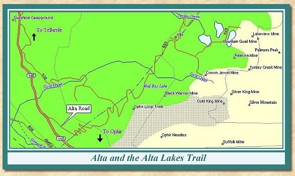
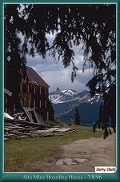
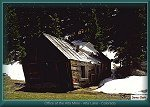

Contributed by Jerry Clark
Photos by Jerry Clark

| A short side trip off Colorado 145 near Ophir will take you to the site of Alta. Alta was a small settlement, merely a mining camp, not a town. A number of buildings remain at the site however, and the views from Alta and the lakes themselves are truly beautiful. |
| Travelling north on Colorado 145 about ½ mile north of Ophir, take the dirt road off to the right. Follow this road up through the forest to the site of Alta. The largest structure is the boarding house, built in 1939 from materials formerly used at the old St. Louis boarding house located up Gold King Basin. Remains of employee houses, the old transformer house, company store, mill and tramway house can be found at the site. |
| Three mills were built at Alta. The Bessie Mill lasted from 1902 through 1918. The Belmont Wagner Mill existed from 1918 through 1929. The last mill, simply known as the Alta Mill was built in 1938. The mill operated until it burned in 1948. Processed ore from the mill was placed on a tramway which terminated at the tram house opposite the Rio Grande Southern Railroad depot in the middle of the Ophir Loop. |
| From the Alta settlement, the jeep trail leading to the right leads to Gold King Basin and the Alta Lakes. The road to the left is the old Boomerang Road which rejoins Colorado 145 2 miles south of Telluride. |
| Approximately 1/4 mile up the trail toward Gold King Basin the trail to the Alta Lakes turns left. The remains of the Palmyra Crushing Plant can be seen above the highest of the three lakes. The St. Louis Palmyra tramway formerly ran between the crushing plant and the mill at Alta. |
| Continuing on the main trail up Gold King Basin, the remains of the Crown Jewel and Silver King mines can be seen on the north side. The lowest level of the Alta mine was level 8, at the Blackhawk Tunnel in Alta. This entrance was near the mill site at an elevation of 11,000 feet. The highest level was up the side of Silver Mountain at an elevation of 12,158. |
| Near the end of the jeep trail are two ponds. The large pond is at an elevation of 11,323 feet. The small pond was the location of the Gold King Mill. From this point, good views can be had of Lizard Head and the surrounding mountains. The two large peaks west of Lizard Head are Mt. Wilson and Wilson Peak. |
|
 |
Alta Mine Boarding House
7/8/96 (69k) |

|
 |
Office at the Alta Mill
Alta, Colorado (109k) |


|
The Narrow Gauge Circle is written, maintained,and hosted by: Mark L. Evans Send Comments to:Mark L. Evans All original materials, text, and digital images Copyright © 1996-2017 Mark L. Evans. All rights reserved. Imitation is said to be the "sincerest" form of flattery.....Please don't flatter us without permission. |